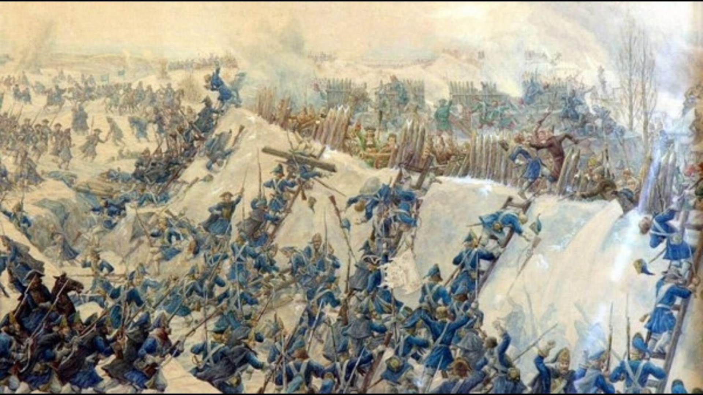
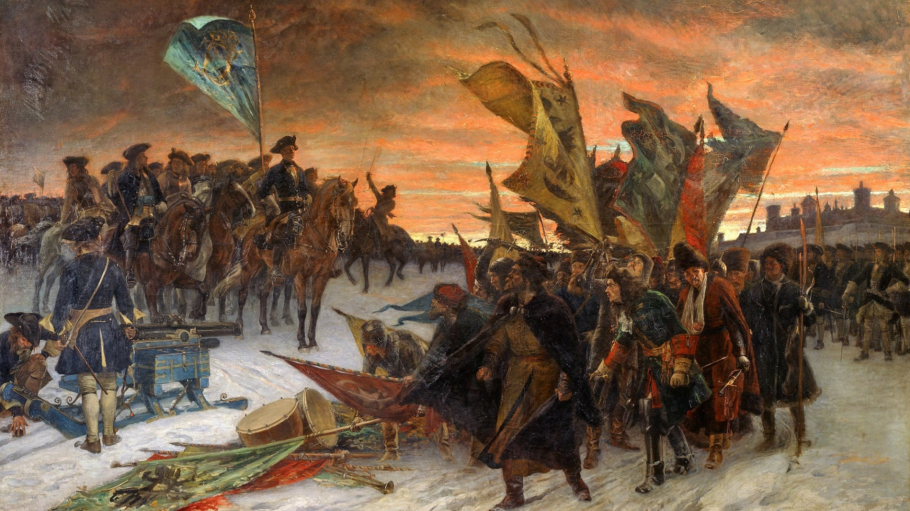
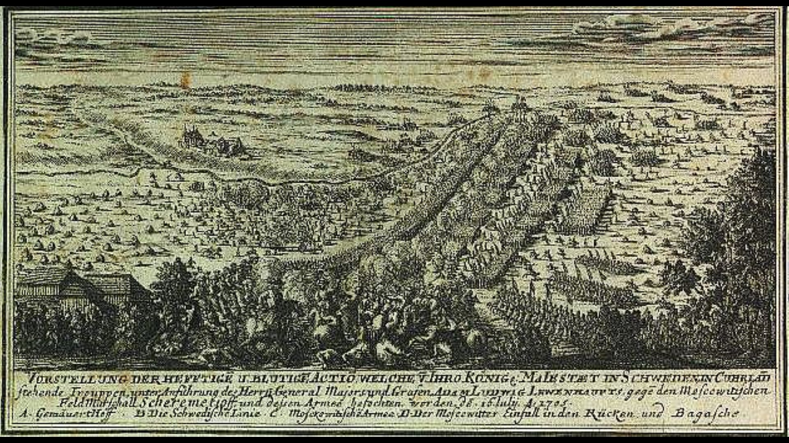

QUIZ Nästa fråga! Rätta! Stormningen av Veprik resulterade i en svensk seger. De svenska styrkorna var ca 3 000 man medan de ryska styrkorna var ca 1500 man. Samtliga ryska trupper dödades eller blev tillfångatagna. Hur många trupper förlorade Sverige? 1000-1600 man 500-1000 man 300 man 2000 man  I slaget vid narva år 1700 var de ryska styrkorna ca 80 000 man inklusive medföljande tross. Hur många fler var ryssarna enligt propagandakällorna? 8 mot 1 3 mot 1 4 mot 1 2 mot 1  I slaget vid Gemauerthof år 1705 stod de ryska styrkorna åter igen överlägsna med upp till 20 000 man mot 7000 svenska trupper. Svenska förlusterna var som mest 2000. Hur stora var de ryska förlusterna? 2000 man 10 000 man 3000 man 5000 man 